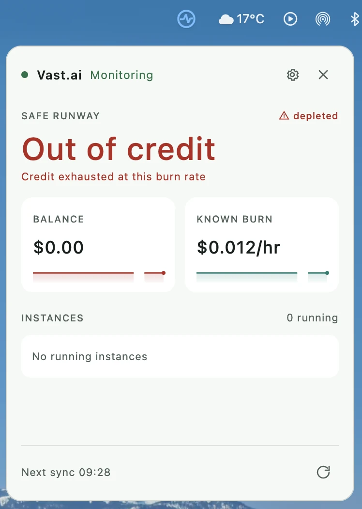
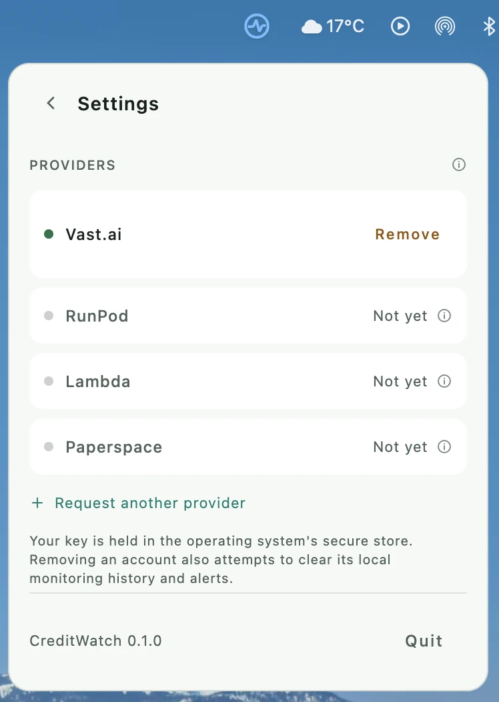
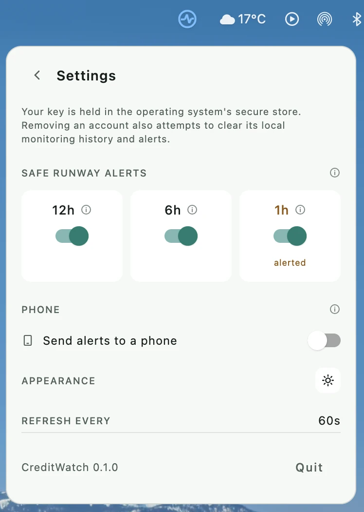

Know how long your cloud credit will last.
CreditWatch lives in the menu bar. It reads your prepaid GPU balance, works out what you are actually burning, and shows the time you have left — so you find out before the instances stop, not after.

Everything happens on your Mac
No account, no server, nothing leaving the laptop but read-only calls to your provider.
Safe runway
A 10% buffer over the higher of current burn and the one-hour average, so the figure errs toward warning you early.
Key stored in Keychain
Connection is blocked, with an explanation, when secure storage is unavailable. It never lands in a config file.
Refreshes every 60 seconds
With backoff on failure and visible stale marking, so a quiet number is never mistaken for a current one.
Alerts at 12h, 6h and 1h
Each threshold switches off on its own, with persisted deduplication. One the runway already fell under cannot be armed.
Alerts on your phone
Pair an ntfy topic by scanning a QR code. Needs the app awake — a sleeping computer measures nothing.
72 hours of local history
Readings are kept in SQLite on disk for three days, which is what the sparklines and the burn average draw on.
The popover is the whole application
There is no main window. It opens under the menu bar icon and closes when it loses focus.


What 1.0.0 does not do
One account at a time
The settings pane lists the others and marks them unavailable. Several at once is a 1.1.0 change.
Phone alerts need the app awake
A sleeping computer measures nothing, so nothing is sent while it sleeps.
macOS only
The Windows and Linux credential stores are written and unit tested, and the Linux round trip passes headless — but nobody has run the desktop app there.
Bandwidth is not in burn
Treated as an unknown cost and left out rather than guessed at.
Apple Silicon only
The build is arm64. It will not run on an Intel Mac.
Why there is no download button
macOS flags anything a browser downloads. On a flagged app, Gatekeeper wants a signature traceable to a registered developer and a notarization ticket from Apple. CreditWatch has neither yet, so a downloaded build would simply be refused — and since macOS 15 the right-click-to-open workaround is gone.
Signing pending
The build is already wired for signing and switches on the moment a certificate exists. Rather than ship a file that makes you fight your own operating system, the download arrives when it is signed. Building from source takes one command.